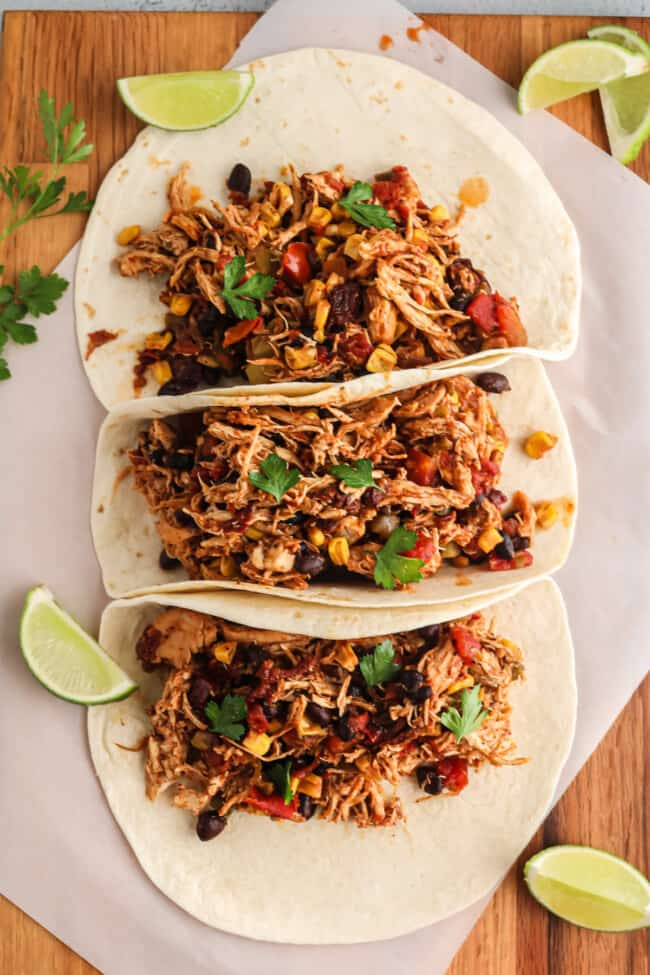

Shredded Chicken Tacos

Description
Mouth watering, easy to make, shredded chicken tacos, perfect for a quick meal.
Ingredients (makes about 8 tacos)
- 1/4 cup water
- 1 (1 ounce) packet taco seasoning
- 2 (8 ounce) cans tomato sauce
- 2 teaspoons white distilled vinegar
- 2 teaspoons minced garlic
- 2 teaspoons ground oregano
- 1 teaspoon ground cumin
- 1/2 teaspoon white sugar
- 2 tablespoons olive oil
- 2 pounds skinless, boneless chicken breast
- 8 taco shells or tortillas
Steps
- Mix the water and taco seasoning together in a large bowl. Then add tomato sauce, vinegar, garlic, oregano, cumin and sugar. Make sure to mix this well.
- Heat oil in a large skillet over medium-high heat. Add chicken and cook until golden brown, about 5 minutes per side.
- Add tomato sauce mixture and bring to a boil.
- Reduce heat to medium-low, cover, and simmer until chicken is no longer pink in the center and the juices run clear, about 20 minutes. An instant-read thermometer inserted into the center should read at least 165 degrees F (74 degrees C).
- Remove chicken breasts from the pan and shred meat with 2 forks when cool enough to handle. Return shredded chicken to the pan with the tomato sauce.
- Cook and stir until chicken is coated with sauce and sauce reduces a bit, about 5 minutes.
- Transfer chicken and sauce to a serving bowl and spoon onto taco shells/tortillas.
- Enjoy!